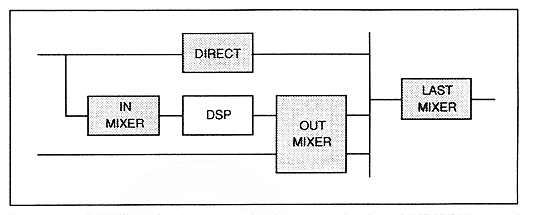

Figure 4.53 Digital mixer block diagram

¡A mixer block that manages the path where each slot output directly connects to the DAC output. The output level ("DISDL") and output balance ("DIPAN") can be controlled for each slot.
∙ Performs mixing to input the output of each slot to DSP ("MIXS"). Actually, select “MIXS” to input the audio signal with “ISEL” of each slot, and adjust the input level with “IMXL”. When mixing multiple sounds with "ISEL", it is necessary to balance each sound.
"MIXS" can mix and input multiple slot outputs, so the same effect processing can be performed for multiple sounds like BGM reverb. Also, when applying effects with DSP, transfer the audio data to "MIXS".
∙ Audio that has been applied with DSP effects and audio that has been captured by external digital input are finally combined into stereo through a mixing process. The output level ("EFSDL") and output balance ("EFPAN") can be adjusted for audio signals output from "EFREG" equivalent to DSP and "EXTS" that receives external digital audio input. I can do it. The data collected here is also mixed with the direct audio component.